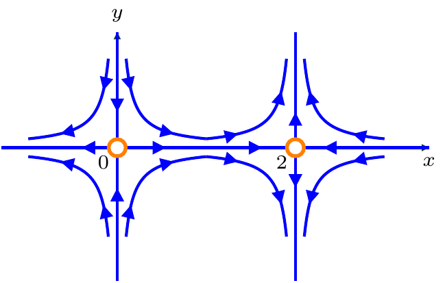
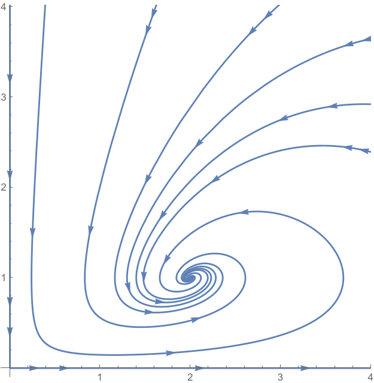

8 Global phase portrait
8.1 General scheme
- Let \(f,g:D\to{\mathbb{R}}\), \(D\subseteq{\mathbb{R}}^2\) be smooth, and
\[ \begin{cases} x'=f(x,y),\\ y'=g(x,y), \end{cases} \tag{8.1}\]
for \(t\in I\subseteq{\mathbb{R}}\), be such that, for each \(t_0\in I\) and \((x(t_0),y(t_0))\in D\), (8.1) has a unique solution \((x(t),y(t))\in D\) for \(t\in I\).
The global phase portrait of (8.1) shows the behaviour of all “typical” trajectories of (8.1) over the whole domain \(D\).
To get the global phase portrait, one should, firstly, describe (if possible) the local phase portraits around each of fixed points of (8.1).
Recall that it is always possible for fixed points which are nodes, saddles, or spirals. For linear centres, however, a further analysis is needed (see below).
Then one should sketch the trajectories connecting the neihgbourhoods of the fixed points, so that the “global” trajectories would reflect the revealed local phase portraits. Several tricks discussed below may help to do this in a non-contradictory way.
8.2 Trajectories on straight lines
A vertical straight line \(x=a\), \(a\in{\mathbb{R}}\) (on the phase space \({\mathbb{R}}^2\)) contains trajectories of (8.1) iff \[ \high{f(a,y)=0, \quad \text{for all } y\in{\mathbb{R}} \text{ s.t. } (a,y)\in D.} \] In other words, the constant function \(x(t)=a\) satisfies the first eqution in (8.1).
The phase portrait on the line \(x=a\) is determined then from the one-dimensional dynamical system
\[ y'=g(a,y). \]
- Similarly, a horizontal straight line \(y=b\), \(b\in{\mathbb{R}}\), contains trajectories of (8.1) iff
\[ g(x,b)=0, \quad \text{for all } x\in{\mathbb{R}} \text{ s.t. } (x,b)\in D. \]
In other words, the constant function \(y(t)=b\) satisfies the second eqution in (8.1).
- The phase portrait on the line \(y=b\) is determined then from the one-dimensional dynamical system
\[ x'=f(x,b). \]
- Intersections of such vertical and horizontal lines are (some of) the fixed points of (8.1).
8.3 Example
Consider the dynamical system \[ \begin{cases} x'=2x-x^2,\\ y'=-y+xy. \end{cases} \] The fixed points are \(O(0,0)\) and \(A(2,0)\) (check!). The linearisation at \(O\) has eigenvalues \(\lambda_1=2\color{red}>0\) and \(\lambda_2=-1\color{blue}<0\) (check!), hence \(O\) is a saddle fixed point; and the corresponding eigenvectors are (check!) \(v_1=(1,0)^T\) and \(v_2=(0,1)^T\). Therefore, the horizontal line \(y=0\) is tangent to the manifold and the vertical line \(x=0\) is tangent to the manifold around \(O\).
The linearisation at \(A\) is also a saddle, since (check!) the eigenvalues \(\lambda_1=-2\color{blue}<0\) and \(\lambda_2=1\color{red}>0\); and the corresponding eigenvectors are \(v_1=(1,0)^T\) and \(v_2=(0,1)^T\). Therefore, the same horizontal line \(y=0\) is tangent now to the manifold, and the vertical line \(x=2\) is tangent to the manifold around \(A\).
To extend the local phase portraits around \(O\) and \(A\) to the global one, we have to “join” disconnected trajectories. In general, it can eb done in different ways, however, here one can notice that \(x(t)\equiv0\) and \(x(t)\equiv2\) solve the first eqution, and \(y(t)\equiv 0\) solves the second equation. Therefore, the vertical lines \(x=0\) and \(x=2\) and the horizontal line \(y=0\) contain trajectories of the given system. In particular, the mentioned stable and unstable manifolds (locally around the fixed points) lie on these lines.
On \(y=0\), the phase portrait is given by the first equation, there are three trajectories there, and \(x=0\) is unstable and \(x=2\) is stable there. Stress that the correspondin arrows should be agreed with the local phase portraits around \(O\) and \(A\). On \(x=0\), the phase portrait is given by \(y'=-y\), and on \(x=2\), the phase portrait is given by \(y'=y\).
SInce the trajectories do not intersect, we get the global phase portrait

8.4 Remark
For smooth \(f,g\), the solutions to (8.1) are continuous functions, which conrinuously depend on the initial conditions. Since each point inside \(D\) may be an initial condition, two trajectories in a small region which does not contain fixed points should behave similarly. In particular, the hyperbola-like trajectories in the previous example will asymptotically convrge to the corresponding horizontal and vertical trajectories.
8.5 Trajectories on straight lines (cont.)
- A slanted straight line \(y=px+q\), \(p\neq0\), containes trajectories of (8.1) if
\[ \frac{y'}{x'}=p \quad \text{along this line} \]
(the slope of the direction vector remains constant there), i.e. if
\[ \frac{g(x,px+q)}{f(x,px+q)}=p \]
for all \(x\in{\mathbb{R}}\) such that \((x,px+q)\in D\). (Remark: we will mostly have \(D={\mathbb{R}}^2\).)
- Such line often exists if two fixed points (nodes or saddles) have equal (or proportional) one of the main directions.
8.6 Example
Consider the dynamical system
\[ \begin{cases} x'= x (6 - x + 2 y),\\ y'= y (x-y - 4). \end{cases} \tag{8.2}\]
This system has four fixed points (check the following by yourself!):
\(O(0,0)\) is a saddle point: \(\lambda_1=6\), \(\lambda_2=-4\), \({\color{red}v_1=(1,0)^T}\), \({\color{blue}v_2=(0,1)^T}\);
\(A(6,0)\) is a saddle point: \(\lambda_1=-6\), \(\lambda_2=2\), \({\color{blue}v_1=(1,0)^T}\), \({\color{red}v_2=(3,2)^T}\);
\(B(0,-4)\) is a saddle point: \(\lambda_1=4\), \(\lambda_2=-2\), \({\color{red}v_1=(0,1)^T}\), \({\color{blue}v_2=(3,2)^T}\);
\(C(2,-2)\) is a linear centre: \(\lambda_1=2i\), \(\lambda_2=-2i\); hence, the phase portrait at \(C\) requires further analysis (which we will consider later on).
Next, \(x=0\) and \(y=0\) solve the first and second equations, respectively. Therefore, the coordinate axes contain trajectories: \(x=0\) implies \(y'=-y(y+4)\), where \(y=0\) is stable and \(y=-4\) is unstable fixed points; similarly, \(y=0\) implies \(x'=x(6-x)\), where \(x=0\) is unstable and \(x=6\) is stable fixed points. In particular, the (local) unstable manifold for \(O\) and the stable manifold for \(A\) lie on \(y=0\) and the (local) stable manifold for \(O\) and the unstable manifold for \(B\) lie on \(x=0\).
Also, we see that the other main directions for \(A\) and for \(B\) coinside. It gives a guess to try line \(AB\); its equation is \[ \frac{x-6}{0-6}=\frac{y-0}{-4-0}, \quad y=\frac23x - 4. \] The slope \(\frac23\) of \(AB\) is the slope of the common main direction \((3,2)^T\) of saddles at \(A\) and at \(B\). Let \((x(t),y(t))\) lie on \(AB\), i.e. \(y=\frac23x - 4\). Then \[ \begin{aligned} x'&=x \bigl(6 - x + \frac43x - 8\bigr)=\frac13x(x-6),\\ y'&=\bigl(\frac23x - 4\bigr) \frac13x=\frac29x(x-6), \end{aligned} \] and hence \[ \frac{y'}{x'}=\frac23. \] Therefore, the line \(y=\frac23x - 4\) contain trajectories. Next, on this line, by the above, \(x'>0\) and \(y'>0\) for \(x<0\) and for \(x>6\), and \(x'<0\) and \(y'<0\) for \(x\in(0,6)\). This gives the phase portrain on the line. (Note that the arrows on the line should be agreed with the local phase portraits around \(A\) and \(B\).)
Since the trajectories do not intersecr, the trangle \(OAB\) is a “trap”: if \((x(t_0),y(t_0))\) lies inside this triangle, then \((x(t),y(t))\) will remain inside this triangle forever.
8.7 Example
The phase picture on lines containing the sides of \(OAB\) and the phase picture outside \(OAB\) is now clear. Whether trajectories inside \(OAB\) are spirals or cycles, we will discuss later on.
8.8 Definition
Isocline is a curve/line in the phase space at each point of which the direction vector \((x',y')\) has the same gradient (slope).
In other words, the tangent lines to trajectories, at the points where they intersect an isocline, are parallel.
An isocline is not, in general, a trajectory, unless the case of a straight line trajectory (which is trivially “tangent” to itself at each point).
The important particular cases of isoclines are nullclines:
\(x\)-nullclines are curves/lines along which \(x'=0\), i.e. they are determined from the equation \(f(x,y)=0\);
\(y\)-nullclines are curves/lines along which \(y'=0\), i.e. they are determined from the equation \(g(x,y)=0\).
\(x\)-nullclines intersect \(y\)-nullclines at the fixed points.
8.9 Example: continuation of Example 8.6
Find the nullclines of (8.2):
\(x\)-nullclines are \(x=0\) (trivial as it is a trajectory) and \(6-x+2y=0\),
\(y\)-nullclines are \(y=0\) (trivial) and \(x-y-4=0\).
These two lines hence contain turning points for the trajectories they intersect: on \(x\)-nullcline \(y=\frac{x}{2}-3\), the tangent lines to trajectories are vertical, and on \(y\)-nullcline \(y=x-4\), the tangent lines to trajectories are horizontal.
In particular, this provides more detailed description of the behaviour of solutions. E.g. if we know that \[ {\color{orange}{x(0)-4}}< y(0) < {\color{blue}{\frac{2}{3}x(0)-4}}, \] i.e. if \((x(0),y(0))\) lies above the (orange) \(y\)-nullcline and below the (blue) slanted straight line of trajectories, then \(x(t)\) and \(y(t)\) will both increase until a unique moment of time \(t_1>0\) when \(y(t_1)=x(t_1)-4\), and after this \(x(t)\) will continue increase, converging to \(0\) as \(t\to\infty\), whereas \(y(t)\) will decrease to \(-\infty\).
8.10 Integral of motion
Let \(f,g\) in (8.1) be smooth on \(D\subseteq{\mathbb{R}}^2\) and let \(D_1\subseteq D\) be an open set. A smooth function \(h:D_1\to{\mathbb{R}}\) is said to be an integral of motion (a.k.a. a first integral) of (8.1) if \(h(x(t),y(t))\) is constant for any solution \((x(t),y(t))\in D_1\), \(t\in I\), of (8.1).
The characteristic property of an integral of motion is the identity \(\dfrac{d}{dt} h(x(t),y(t))=0\), which can be rewritten as follows: \[ \begin{multlined} \dfrac{\partial}{\partial x} h(x(t),y(t))\cdot f(x(t),y(t))\\+\dfrac{\partial}{\partial y} h(x(t),y(t))\cdot g(x(t),y(t))=0 \end{multlined} \] for all \((x(t),y(t))\in D_1\), \(t\in I\).
Since \(D_1\subset D\) and, for any \((x,y)\in D\), there is a trajectory which passes through it, to find a first integral one needs to find \(h:D_1\to{\mathbb{R}}\) such that
\[ \begin{gathered} \dfrac{\partial}{\partial x} h(x,y)\cdot f(x,y)+\dfrac{\partial}{\partial y} h(x,y)\cdot g(x,y)=0, \\ \text{for all } (x,y)\in D_1. \end{gathered} \]
- The trajectories \((x(t),y(t))\in D_1\) then lie on the curves, determine dby the levels of function \(h\):
\[ {h(x,y)=C}, \qquad (x,y)\in D_1, \ C\in J\subseteq{\mathbb{R}}. \]
By the existence and uniquencess theorem, each such curve is a disjoint union of trajectories.
If \(h=h(x,y)\) is an integral of motion of (8.1) in \(D_1\), then \(\tilde{h}(x,y):=k(h(x,y))\) is also an integral of motion of (8.1) in \(D_1\), for any smooth \(k:{\mathbb{R}}\to{\mathbb{R}}\). In particular, \(ah(x,y)+b\) is an integral of motion, for any \(a,b\in{\mathbb{R}}\).
The dynamical system (8.1) is called conservative if it has an integral of motion on the whole phase plane \({\mathbb{R}}^2\) (i.e. if \(D_1=D={\mathbb{R}}^2\)).
8.11 Remark
Despite the name, integrals of motion do not reveal solutions to (8.1), they rather provide the shape of the trajectories.
Integrals of motion are one of the main ways to determine nonlinear centres (see below).
8.12 Example: Predator-prey model
Consider the dynamical system \[ \begin{cases} x'=x( \mathtt{a} - \mathtt{ b} y),\\ y'=y( \mathtt{d} x- \mathtt{c} ). \end{cases} \] Here \(x\geq0\) represents the density of a population of preys and \(y\) represents the density of a population of predators.
The coefficients are positive: \[ \mathtt{a} >0, \mathtt{b} >0, \mathtt{c} >0, \mathtt{d} >0. \]
Remark
Note that if, however, $ =0$, then \(x'= \mathtt{a} x\) implies \(x(t)=x(0)e^{ \mathtt{a} t}\nearrow\infty\) for \(x(0)>0\) and $ >0$. In other words, the population of preys will exponentially grow if the predators will not influence them (we suppose that preys do not compete between themselves and have infinitely many food). In contrast, if $ =0$, then \(y'=- \mathtt{c} y\) implies \(y(t)=y(0)e^{-\mathtt{ c} t}\searrow 0\) for $ >0$, i.e. the population of predators without preys (i.e. without food) will extinct.
For positive $ , , , $, there are two fixed points (check the following!):
the origin \(O(0,0)\) which is a saddle point with the main directions along the coordinate axis which also contain trajectories; as a result, \(x=0\) is the stable manifold and \(y=0\) is an unstable manifold;
the point \(A\bigl( \frac{ \mathtt{c} }{ \mathtt{d} }, \frac{ \mathtt{a }}{ \mathtt{b} }\bigr)\) which is a linear centre.
To find an integral of motion, we divide equations (similar to Example 7.11): \[ \frac{dx}{dy}=\frac{x(\mathtt{a}- \mathtt{b} y)}{y(\mathtt{d} x- \mathtt{c})}, \] and one can separate variables: \[ \mathtt{d} x- \mathtt{c} \log x = \mathtt{a}\log y- \mathtt{b} y+C \] Therefore, \[ h(x,y)=\mathtt{d} x- \mathtt{c} \log x-\mathtt{a}\log y+ \mathtt{b} y \] and the trajectories lie on the curves \(h(x,y)=C\in{\mathbb{R}}\).
By Theorem 7.17, the fixed point at \(A\) may be either nonlinear centre or spiral. To distinguish these two cases note that, for a centre, any trajectory has a finite number of intersections with a line \(x=x_1\) if \(x_1\) is close enough to \(\dfrac{\mathtt{c}}{\mathtt{d}}\).
Whereas, for a spiral, there will be infinitely many points of intersection. However, the equation \(h(x_1,y)=C\) has at most two solutions (in \(y\)). Indeed, it implies \[ \log y=\frac{\mathtt{b}}{\mathtt{a}}y+K, \qquad K:=\frac{\mathtt{d} x_1- \mathtt{c} \log x_1-C}{\mathtt{a}}, \] and the line \(\frac{\mathtt{b}}{\mathtt{a}}y+K\) has at most two points of intersection with the curve \(\log y\) (check!).
As a result, we indeed have a nonlinear centre at \(\Bigl( \dfrac{\mathtt{c}}{\mathtt{d}}, \dfrac{\mathtt{a}}{\mathtt{b}}\Bigr)\). Note also that both functions \(x(t)\) and \(y(t)\) are hence periodic. Finally, since \(y\to0\) along the line \(x=0\) (\(y\)-axis) and \(x\to\infty\) along the line \(y=0\) (\(x\)-axis), then the motion goes counter-clockwise.
8.13 Example: Hamiltonian dynamics
Hamiltonian dynamics describes the one-dimensional motion of a particle, with position \(q=q(t)\in{\mathbb{R}}\), momentum \(p=p(t)\in{\mathbb{R}}\), and a Hamiltonian \(H=H(q,p)\), according to the following equations of motion: \[ \begin{cases} q'=\dfrac{\partial H}{\partial p}(q,p),\\[3mm] p'=-\dfrac{\partial H}{\partial q}(q,p). \end{cases} \] Hence, here \((x,y)=(q,p)\), \(f=\frac{\partial H}{\partial p}\), \(g=-\frac{\partial H}{\partial q}\). Then, choosing \(h:=H\), we clearly get \[ \frac{\partial h}{\partial q}\cdot \frac{\partial H}{\partial p}+ \frac{\partial h}{\partial p}\cdot \Bigl(-\frac{\partial H}{\partial q}\Bigr)=0; \] therefofe, all trajectories lie on the levels \(H(q,p)=\mathrm{const}\).
8.14 Example
Consider the dynamical system
\[ \begin{cases} x'=f(y),\\ y'=g(x), \end{cases} \tag{8.3}\]
where \(f,g:{\mathbb{R}}\to{\mathbb{R}}\) are smooth on \({\mathbb{R}}\).
We define \[ h(x,y)=\int f(y) dy -\int g(x) dx. \] Then \[ \dfrac{\partial}{\partial x} h(x,y)=-g(x), \quad \dfrac{\partial}{\partial y} h(x,y)=f(y), \] and hence \(\dfrac{\partial}{\partial x} h\cdot f +\dfrac{\partial}{\partial y} h\cdot g=0\) on \({\mathbb{R}}^2\). Therefore, all trajectories of (8.3) lie on the curves \(h(x,y)=C\), \(C\in{\mathbb{R}}\).
Nore also that if \((x_*,y_*)\) is a fixed point of (8.3), i.e. if \(g(x_*)=f(y_*)=0\), then the linearisation at \((x_*,y_*)\) is determine by the Jacobian: \[ J(x_*,y_*)=\begin{pmatrix}0& f'(y_*)\\g'(x_*) &0\end{pmatrix}. \] The characteristic equation is then \[ \lambda^2-g'(x_*)f'(y_*)=0. \] Excluding more delicate degenerate case \(g'(x_*)f'(y_*)=0\), we see that if \(g'(x_*)f'(y_*)>0\), \((x_*,y_*)\) is a saddle, and if \(g'(x_*)f'(y_*)<0\), \((x_*,y_*)\) is a linear centre. The next example shows both possibilities.
8.15 Example
Consider the dynamical system \[ \begin{cases} x'=y,\\ y'=x-x^3. \end{cases} \] The fixed points are \((0,0)\), \((1,0)\), \((-1,0)\).
At \((0,0)\), the eigenvalues are \(\pm1\), the stable manifold is tangent to the main direction \(v_1=(-1,1)^T\), the unstable manifold is tangent to the main direction \(v_2=(1,1)^T\) (check!).
Both \((1,0)\) and \((-1,0)\) are linear centres, hence, the local phase portraits require further analysis.
Consider \[ h(x,y)=\int y dy - \int(x-x^3) dx=\frac{y^2}{2}-\frac{x^2}{2}+\frac{x^4}{4}. \] Then \(h\) satisfies \(\dfrac{\partial}{\partial x} h\cdot f +\dfrac{\partial}{\partial y} h\cdot g=0\) on \({\mathbb{R}}^2\), with \(f(x,y)=y\) and \(g(x,y)=x-x^3\). Hence \(h\) is an integral of motion. Construct then another integral of motions: \(4h+1\) (to get rid of denominators and also to obtain the full square in \(x\)): the trajectories lie on the curves \(x^4-2x^2+1+2y^2=\mathrm{const}\), i.e.
\[ (x^2-1)^2+2y^2=C. \tag{8.4}\]
With necessity, hence, \(C\geq0\).
Recall that, by Theorem 7.17, \((\pm1,0)\) may be either nonlinear centres or spirals. When \(C=0\) in (8.4), it reads \(x^2-1=y=0\), and the trajectories are just these fixed points. For small \(C>0\), hence the trajectories are close to the fixed point. Take e.g. \(x=1\) and any small enough \(C>0\), then there are two values of \(y\), such that (8.4) holds. In other words, the vertical line \(x=1\) crosses the trajectory (8.4) with small \(C>0\) at two points only; that would be impossible if \((1,0)\) were a (nonlinear) spiral. Hence, both \((\pm1,0)\) are nonlinear centres (locally!).
We can analyse here the global phase portrait as well. Since (8.4) implies \[ |x^2-1|\leq \sqrt{C}, \qquad |y|\leq\sqrt{C}, \] the trajectories are bounded subsets of \({\mathbb{R}}^2\). The trajectories are given by the graphs \[ y=\pm\sqrt{\frac12(C-(x^2-1)^2)} \quad \text{for } |x^2-1|\leq \sqrt{C}. \] The restriction on \(x\) yields
\[ 1-\sqrt{C}\leq x^2\leq 1+\sqrt{C}. \tag{8.5}\]
Note also that the trajectories are symmetric with respect to both coordinate axes.
Let \(x\geq0\). For \(0< C<1\), (8.5) reads \[ \sqrt{1-\sqrt{C}}\leq x\leq \sqrt{1+\sqrt{C}}, \] and the trajectories pass through points \((\sqrt{1\pm\sqrt{C}},0)\). Hence the trajectories are indeed cycles around the fixed point \((1,0)\).
For \(C=1\), (8.5) reads \(0\leq x\leq \sqrt{2}\), and if \(x\to0\) then \(y\to0\) as well. Therefore, if a trajectory starts near the origin, it then pass through \((\sqrt{2},0)\) and return to the origin. Since the origin is a fixed point, the trajectory will just tend to the origin, but will not contain it. As a result, the stable manifold at the origin is given by the trajectory \(y=-\sqrt{\frac12(1-(x^2-1)^2)}\) and the unstable manifold at the origin is given by the trajectory \(y=\sqrt{\frac12(1-(x^2-1)^2)}\). (Check that indeed \(y'(0)=\mp1\) according to the main directions \(v_1\) and \(v_2\).)
For \(C>1\), (8.5) reads \[ 0\leq x\leq \sqrt{1+\sqrt{C}}, \] and the trajectories pass through \((\sqrt{1+\sqrt{C}},0)\) and \((0,\pm\sqrt{\frac{1}{2}(C-1)}\).
Note also the direction vectors \((x',y')\) at e.g. \(x\)-axis, where \(y=0\), are \((x-x^3,0)\), i.e. they are directed up for \(x<-1\) and \(0<x<1\) and down otherwise. Hence the motion is indeed clockwise (also to be agreed with the motion at the origin).
8.16 Definition
A trajectory which starts and finishes at the same fixed point (but does not contain it) is called a homoclinic orbit.
8.17 Linear centre and straight trajectories
Let \((x_*,y_*)\) be a linear centre of (8.1).
Suppose that there is a region \(D\subset {\mathbb{R}}^2\) (bounded or unbounded) such that
\((x_*,y_*)\in D\),
the interior of \(D\) does not contain another fixed points of (8.1),
the boundary of \(D\) is a union of straight trajectories given by equations \[ k_1(x,y)=0, \ldots, k_n(x,y)=0 \] (i.e. \(a_1x+b_1y+c_1=0\), , \(a_nx+b_ny+c_n=0\)).
Then one can look for the integral of motion of the form \[ h(x,y)=\bigl(k_1(x,y)\bigr)^{p_1}\ldots \bigl(k_n(x,y)\bigr)^{p_n} \] for certain values of \(p_1,\ldots,p_n>0\).
The boundary of \(D\) will satisfy hence \(h(x,y)=0\).
Note that \(p_1,\ldots,p_n\) are determined not uniquely, as \((h(x,y))^q\) will be also an integral of motion for any \(q>0\).
8.18 Example: finalising Example 8.6
Recall that we are dealing with the dynamical system (8.2), i.e. \[ \begin{cases} x'= x (6 - x + 2 y)=:f(x,y),\\ y'= y (x-y - 4):=g(x,y), \end{cases} \] and \(C(2,-2)\) is its linear centre which lies inside triangle \(OAB\) whose boundaries are \(x=0\), \(y=0\), \(y=\frac23x-4\). Rewriting the latter equation as \(2x-3y-12=0\), we consider \[ h(x,y)=x^ay^b(2x-3y-12)^c, \] for some \(a,b,c>0\). We are going to find \(a,b,c>0\), such that, for all \((x,y)\in{\mathbb{R}}^2\) (it would be enough to have this inside \(OAB\)) \[ \dfrac{\partial}{\partial x} h \cdot f +\dfrac{\partial}{\partial y} h\cdot g=0. \tag{8.6}\]
However, since for any integral of motion \(h\), the function \(h^{\frac{1}{c}}\) is also an integral of motion, we can assume that \(c=1\), hence,
\[ {h(x,y)=x^ay^b(2x-3y-12),} \]
We have \[ \begin{aligned} \dfrac{\partial}{\partial x} h(x,y)&=x^{a-1}y^b \bigl( 2(a+1)x-3ay-12a\bigr),\\ \dfrac{\partial}{\partial y} h(x,y)&=x^ay^{b-1} \bigl( 2bx-3(b+1)y-12b\bigr). \end{aligned} \]
Therefore, \[ \begin{aligned} &\quad \dfrac{\partial}{\partial x} h \cdot f +\dfrac{\partial}{\partial y} h\cdot g \\ &= x^ay^b \Bigl( \bigl( 2(a+1)x-3ay-12a\bigr)(6 - x + 2 y)\\ &\qquad\qquad + \bigl( 2bx-3(b+1)y-12b\bigr)(x-y - 4)\Bigr). \end{aligned} \] To have (8.6) for all \(x,y\), we require \[ \begin{multlined} \bigl( 2(a+1)x-3ay-12a\bigr)(6 - x + 2 y)\\ + \bigl( 2bx-3(b+1)y-12b\bigr)(x-y - 4)=0. \end{multlined} \] The coefficient before \(x^2\) requires: \(a+1=b\). The coefficient before \(y^2\) requires: \(b+1=2a\), Therefore, \(b+1=2b-2\), \(b=3\), then \(a=2\). Then the requirement is satisfied (check!). Hence, the curves \[ h(x,y):=x^2y^3(2x-3y-12)=D, \qquad D\in{\mathbb{R}}, \] contains (all) trajectories of the system (8.2). At the edges of triangle \(OAB\), \(h(x,y)=0\). At the fixed point \(C(2,-2)\), \(h(2,-2)=64\). Therefore, by continuity, the levels \(h(x,y)=D\) for \(D\in[0,64]\) contain trajectories inside the triangle. (Note that these levels contain other trajectories as well.)
8.19 Example
If we consider e.g. \(x=2\), and if \(D<64\) is close to \(64\), then there only finite number of \(y\) such that that \(h(x,y)=D\) holds. Hence \(C(2,-2)\) cannot be a spiral fixed point, therefore, it is a (nonlinear) centre.
8.20 Remark
More generally, if a linear centre is inside a bounded region which does not contain another fixed points and whose boundary is a union of straight trajectories given by linear equations \(k_1(x,y)=0, \ldots, k_n(x,y)=0\), then one can look for the integral of motion of the form \(h=k_1^{p_1}\ldots k_n^{p_n}\) for some \(p_1,\ldots,p_n>0\); one of which can be chosen equal to \(1\).
8.21 Definition
Recall that (see Remark 6.12) that a fixed point \((x_*,y_*)\) of (8.1) is said to be Lyapunov stable (stable in the sense of Lyapunov) if, for every neighbourhood \(U\subset{\mathbb{R}}^2\) of \((x_*,y_*)\), there exists a (smaller) neighbourhood \(W\subset U\) such that any trajectory which starts in \(W\) remains in \(U\) for all \(t\).
8.22 Definition
A fixed point \((x_*,y_*)\) of (8.1) is said to be asymptotically stable if
it is Lyapunov stable, and
there exists a neighbourhood \(U\subset{\mathbb{R}}^2\) of \((x_*,y_*)\), such that any trajectory which starts in \(U\) converges to \((x_*,y_*)\) as \(t\to\infty\).
8.23 Definition
A fixed point \((x_*,y_*)\) of (8.1) is said to be neutrally stable if it is stable in the sense of Lyapunov but it is not asymptotically stable.
8.24 Remark
A typical example of a neutrally stable fixed point is hence a nonlinear centre.
8.25 Remark
Note that even if all trajectories of the system converge to the unique fixed point, it may be not stable in the sense of Lyapunov and hence it will not be asymptotically stable. For example: \[ \begin{cases} x'=\dfrac{x^2(y-x)+y^5}{(x^2+y^2)(1+(x^2+y^2)^2)}, \\[3mm] y'=\dfrac{y^2(y-2x)}{(x^2+y^2)(1+(x^2+y^2)^2)}, \end{cases} \] has the only fixed point at the origin, that is, however, non-hyperbolic: \(J(0,0)=\begin{pmatrix}-1&1\\0&0\end{pmatrix}\). The trajectories look as follows:

8.26 Asymptotic stability from linearisation
- If a fixed point \((x_*,y_*)\) of (8.1) is such that the linearisation of (8.1) at \((x_*,y_*)\) has eigenvalues with
\[ {\mathrm{Re} \lambda_1<0\quad \text{and} \quad \mathrm{Re} \lambda_2<0} \]
(and hence, in particular, is hyperbolic) , then \((x_*,y_*)\) is an asymptotically stable fixed point, in some, possibly, small neighbourhood \(U\subset{\mathbb{R}}^2\) of \((x_*,y_*)\).
This corresponds hence to a stable node or stable spiral of the linearisation which is preserved in the local phase portrait of the nonlinear system (8.1), as well a stable degenerate node or stable star of the linearisation which does not illuminate the phase portrait of (8.1), but still keeps the stability.
We are going to discuss now how to extend the domain \(U\) on which the asymptotic stability takes place to justify/enhance the global phase portrait of (8.1).
8.27 Definition
Let \((x_*,y_*)\in U \subset {\mathbb{R}}^2\) be a point and its neighbourhood on plane. Let \(V: U\to{\mathbb{R}}\) and
\[ {V(x_*,y_*)=0.} \]
Then \(V\) is said to be
- positive definite in \(U\), if
\[ {V(x,y)>0 \quad \text{for all } (x,y)\in U\setminus \{(x_*,y_*)\};} \]
- negative definite in \(U\), if
\[ {V(x,y)<0 \quad \text{for all } (x,y)\in U\setminus \{(x_*,y_*)\};} \]
- positive semi-definite in \(U\), if
\[ {V(x,y)\geq 0 \quad \text{for all } (x,y)\in U\setminus \{(x_*,y_*)\};} \]
- negative semi-definite in \(U\), if
\[ {V(x,y)\leq 0 \quad \text{for all } (x,y)\in U\setminus \{(x_*,y_*)\}.} \]
8.28 Remark
The notion of positive/negative definite/ semi-definite functions has completely different meaning in some other areas of mathematics (e.g. in probability and analysis).
8.29 Theorem: Lyapunov stability theorem
Let \((x_*,y_*)\in U\subset {\mathbb{R}}^2\) be a fixed point of (8.1), and \(U\) be its neighbourhood. Let \(V:U\to{\mathbb{R}}\) be a smooth function on \(U\) such that
\[ V \text{is positive definite on } U. \]
Denote \(\dfrac{d}{dt} V := \dfrac{d}{dt} V(x(t),y(t)).\)
- If
\[ {\dfrac{d}{dt} V \text{is negative semi-definite on } U,} \]
then \((x_*,y_*)\) is Lyapunov stable in \(U\).
- If
\[ {\dfrac{d}{dt} V \text{is negative definite on } U,} \]
then \((x_*,y_*)\) is asymptotically stable in \(U\);
- if \(\dfrac{d}{dt} V \text{is negative semi-definite on } U\), \(U\) does not contain other fixed points of (8.1), and \(\dfrac{d}{dt} V\) is not equal to \(0\) identically on a trajectory of (8.1), apart from the fixed point \((x_*,y_*)\) itself, then \((x_*,y_*)\) is asymptotically stable in \(U\).
8.30 Lyapunov functions
A function \(V\) which satisfy conditions of the Lyapunov stability theorem is called the Lyapunov function.
More precisely, for a positive definite on \(U\) function \(V\), if item 1 holds, then \(V\) is called a weak Lyapunov function, and if item 2 holds, the \(V\) is called a strong Lyapunov function.
The following functions are often appear Lyapunov functions in examples:
\[ {V_1(x,y)=a(x-x_*)^2+b(y-y_*)^2,} \]
\(a,b>0\), \(U\) is a subset of \({\mathbb{R}}^2\);
\[ {V_2(x,y)=a(x-x_*)^{2m}+b(y-y_*)^{2n},} \]
\(a,b>0\), \(n,m\in{\mathbb{N}}\), \(U\) is a subset of \({\mathbb{R}}^2\);
\[ \begin{multlined} V_3(x,y)=a\bigl(x-x_*-x_*\log\frac{x}{x_*}\bigr)\\+b\Bigl(y-y_*-y_*\log\frac{y}{y_*}\bigr), \end{multlined} \]
\(a,b>0\), \(U\) is a subset of \((0,\infty)\times(0,\infty)\). \ To show that \(V_3\) is positive definite on \((0,\infty)\times(0,\infty)\), note that, for a fixed \(s_*>0\), the function \(p(s)=s-s_*-s_*\log\frac{s}{s_*}\), \(s>0\), has a unique minimum at \(s=s_*\) and \(p(s_*)=0\).
8.31 Remark
Typically, the neighbourhood \(U\) of \((x_*,y_*)\) is either an infinite set, like \({\mathbb{R}}^2\) or \((0,\infty)\times(0,\infty)\), or a level set \[ \{(x,y)\in {\mathbb{R}}^2 \mid V(x,y)\leq C\} \] of the Lyapunov function \(V\) for certain \(C>0\). (Notice the difference between level sets and levels!)
Often the inequality \(\dfrac{d}{dt} V<0\) (or \(\leq 0\)) holds on some set \(D\subset{\mathbb{R}}^2\) only. In this case, the requirement \[ \{(x,y)\in {\mathbb{R}}^2 \mid V(x,y)\leq C \ (\text{or } < C)\}\subset D \] justifies the largest level set (i.e. the largest possible \(C>0\) to have the latter inclusion) to be used as \(U\) in the Lyapunov stability theorem.
8.32 Example
Consider the dynamical system
\[ \begin{cases} x'=x(1 - y),\\ y'=y(x - 1 - y), \end{cases} \tag{8.7}\]
for \(x\geq0\), \(y\geq0\).
This is a modification of the predator-prey model from Example 8.12, here predators compete with rate \(1\) (the term \(-y^2\) in the second equation of (8.7)). Here also the origin \(O\) is a saddle fixed point, with the basis vectors as the main directions (check!). Since \(x=0\) and \(y=0\) are both solutions, the coordinate axes contain trajectories. Again, \(x=0\) is the stable manifold, and \(y=0\) is the unstable manifold (check!). The second fixed point is \(A(2,1)\), and this is a stable spiral (check!). The third fixed point is \((0,-1)\), and it lies out of the quadrant \(\{x\geq0,y\geq0\}\).
Hence, \(A\) is an asymptotically stable in a small neighbourhood. Our aim is to describe the largest possible area for asymptotic stability of \(A\). Consider the function \(V=V_3\) (see above): \[ V(x,y)=a\bigl(x-2-2\log\frac{x}{2}\bigr)+b\bigl(y-1-\log y\bigr). \] Then \[ \begin{aligned} \dfrac{d}{dt} V &= a\bigl(1-\frac{2}{x}\bigr)x(1 - y) + b\bigl(1-\frac{1}{y}\bigr)y(x - 1 - y)\\ &=a(x-2-xy+2y)+b(xy-x+1-y^2). \end{aligned} \] Since we want to have \(\dfrac{d}{dt} V<0\), we take \(a=b\) to get rid of \((b-a)xy\).
Then, taking e.g. \(a=b=1\), \[ \dfrac{d}{dt} V = -(y-1)^2<0, \] unless \(y=1\). However, by the second equation of (8.7), the line \(y=1\) does not contain trajectories of the system unless \(x=2\), that gives the fixed point. Hence, by the third item of the Lyapunov stability theorem, \(A(2,1)\) is asymptotically stable on the whole \(\{x>0,y>0\}\) (the area where \(V\) is well-defined and positive-definite). The direction of motion is determined by the motion on the axes:

8.33 Example
Consider the dynamical system \[ \begin{cases} x'=-y-x^3,\\ y'=x-y^3. \end{cases} \] Here the origin is the only fixed point and this is a linear centre (check!). The local phase portrait is hence unclear. Consider the function \(V(x,y)=x^2+y^2\). Then \[ \begin{aligned} \dfrac{d}{dt} V &=\dfrac{\partial}{\partial x} V \cdot f + \dfrac{\partial}{\partial y} V\cdot g\\ &= 2x(-y-x^3)+2y(x-y^3)\\ &= -2x^4-2y^4<0, \qquad (x,y)\neq(0,0). \end{aligned} \] Therefore, \(V\) is positive-definite in \({\mathbb{R}}^2\), and \(\dfrac{d}{dt} V\) is negative-definite in \({\mathbb{R}}^2\), hence, \(V\) is a strong Lyapunov function in \({\mathbb{R}}^2\). Therefore, the origin is asymptotically stable regardless of the initial condition (a.k.a. globally asymptotically stable), by the Lyapunov stability theorem. In particular, the trajectories are indeed spirals, at least around the origin.
8.34 Example
Consider the dynamical system \[ \begin{cases} x'=x(y-1),\\ y'=y(x-1). \end{cases} \] Here there are two fixed points: the origin \(O(0,0)\) is a linear stable star and \(A(1,1)\) is a saddle (check!). Moreover, the coordinate axes and the line \(y=x\) contain trajectories (check!). We know that the origin will be locally asymptotically stable, and we are going to show how large can be the area of convergence. Consider again the function \(V(x,y)=x^2+y^2\). Then \[ \begin{gathered} \dfrac{d}{dt} V= 2x^2(y-1)+2y^2(x-1)<0 \\ \text{for } x<1, y<1, (x,y)\neq(0,0). \end{gathered} \] Therefore, \(V\) is a strong Lyapunov function on \(D:=\{(x,y)\in{\mathbb{R}}^2\mid x<1,y<1\}\). The largest level set of \(V\) to be a subset of \(D\) is, evidently \[ \{V(x,y)=x^2+y^2< 1\}\subset D, \] i.e. any trajectory which starts inside the unit circle converges to the origin as \(t\to\infty\), by the Lyapunov stability theorem.
8.35 Example
Consider the dynamical system \[ \begin{cases} x'=-y - x^5,\\ y'=x^3 - y^3. \end{cases} \] Here the origin is the only fixed point, however, the local phase portrait is unclear, as the linearisation is \[ \begin{pmatrix} 0 &-1\\0 &0 \end{pmatrix}. \]
We will look for a Lyapunov function in the form: \[ V(x,y)=ax^{2n}+y^{2m}, \qquad a>0, \ n,m\in{\mathbb{N}}. \] Note that if \(V\) is a Lyapunov function, then \(c V\) is also a Lyapunov function for any \(c>0\), because of this, we have taken the second coefficient in \(V\) equal to \(1\). Then \[ \begin{aligned} \dfrac{d}{dt} V &=2nax^{2n-1}(-y - x^5)+2my^{2m-1}(x^3 - y^3)\\ & = -2nax^{2n-1}y-2nax^{2n+4}\\&\quad +2mx^3y^{2m-1}-2my^{2m+2}. \end{aligned} \] Since we need a negative function, we get rid of odd powers by setting \[ mx^3y^{2m-1}=nax^{2n-1}y. \]
Then with necessity \(2n-1=3\), \(2m-1=1\), i.e. \(n=2\), \(m=1\), and \(a=\frac12\). Therefore, \[ \dfrac{d}{dt} V=-2x^{8}-2y^{4}<0, \qquad (x,y)\neq(0,0), \] and \(V\) is a strong Lyapunov function in \({\mathbb{R}}^2\), and hence the origin is globally asymptotically stable by the Lyapunov stability theorem.
8.36 Example
Consider the dynamical system \[ \begin{cases} x'=-y^3 - x + x^5,\\ y'=x. \end{cases} \tag{8.8}\]
Here the origin is the only fixed point, and the linearisation has a line of stable fixed points (check!). The local phase portrait is hence unclear. We will look for a Lyapunov function in the form: \[ V(x,y)=ax^{2n}+y^{2m}, \qquad a>0, \ n,m\in{\mathbb{N}}. \] Then \[ \begin{aligned} \dfrac{d}{dt} V &=2nax^{2n-1}(-y^3 - x + x^5)+2mxy^{2m-1}\\ & = -2nax^{2n-1}y^3 - 2nax^{2n} \\&\quad + 2nax^{2n+4}+2mxy^{2m-1}. \end{aligned} \]
Since we need a negative function, we get rid of odd powers by setting \[ mxy^{2m-1}=nax^{2n-1}y^3, \] then \(n=1\), \(m=2\), \(a=2\). Hence, \(V(x,y)=2x^2+y^4\), and \[ \dfrac{d}{dt} V = - 4x^{2}+ 4x^{6}=-4x^2(1-x^4)<0, \] if \(|x|<1 \text{ and } x\neq0\). The line \(x=0\) does not contain trajectories of (8.8) except the fixed point at the origin, as \(x=0\) in the first equation of (8.8) implies \(y=0\). Hence, we require \[ \{(x,y)\in{\mathbb{R}}^2\mid 2x^2+y^4<C\} \subset \{(x,y)\in{\mathbb{R}}^2\mid |x|<1 \}, \] i.e. find the maximal \(C>0\) such that \[ 2x^2+y^4<C \Longrightarrow |x|<1. \] Therefore, \(C=2\). As a result, by the Lyapunov stability theorem (see item 3), any trajectory which starts inside \[ \{(x,y)\in{\mathbb{R}}^2\mid 2x^2+y^4<2\} \] converges to the origin as \(t\to\infty\).